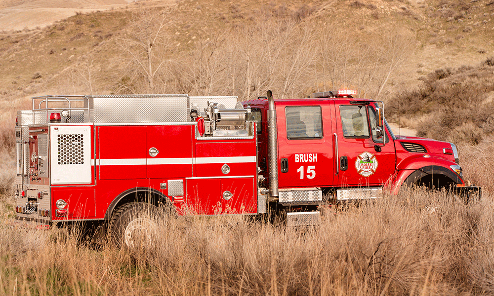
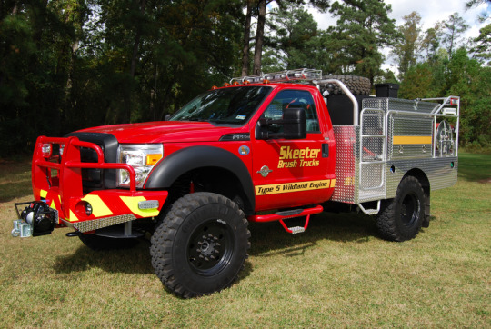
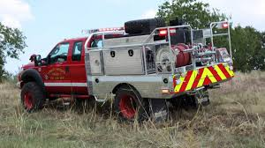

Engines
A wildland fire engine is a fire engine specifically designed to assist in fighting wildfires by transporting firefighters to the scene and providing them with access to the fire, along with water or other equipment. Most commonly used by the United States Forest Service, there are multiple types of wildfire apparatus which are used in different scenarios. Engine crews range in size from two to ten firefighters. They work with specialized wildland fire engines that carry special equipment to spray water and foam. Engine crews also perform a variety of other wildland fire tasks:
- Respond to reports of new wildfires and serve as initial attack forces
- Serve as holding forces on prescribed fires and wildfires to keep the fire from crossing the established perimeter
- Use hand tools, water, and foam to put out fires and keep vegetation and structures from burning
- Patrol forests and grasslands to look for signs of wildfires
- Promote fire prevention with campers and other national forest visitors
Type 3
 The Type 3 Engines traditionally have four-wheel drive to make driving over rough terrain easier, they can also be produced with standard rear wheel drive. Additionally the cab can either be two- or four-door holding up to five people, but no fewer than three. Almost all Type 3s have four doors as a crew size of five is optimum. Type 3s are required to have a minimum of 500 US gallons (1,900 L; 420 imp gal) of water, and be able to pump 150 US gallons per minute (9.5 litres per second; 120 imperial gallons per minute) at a pressure of 250 pounds per square inch (1,700 kPa). They have a typical GVWR of 26,000 pounds (12,000 kg). The Type 3 is the most popular engine in California due to the easy road access of most fires.
The Type 3 Engines traditionally have four-wheel drive to make driving over rough terrain easier, they can also be produced with standard rear wheel drive. Additionally the cab can either be two- or four-door holding up to five people, but no fewer than three. Almost all Type 3s have four doors as a crew size of five is optimum. Type 3s are required to have a minimum of 500 US gallons (1,900 L; 420 imp gal) of water, and be able to pump 150 US gallons per minute (9.5 litres per second; 120 imperial gallons per minute) at a pressure of 250 pounds per square inch (1,700 kPa). They have a typical GVWR of 26,000 pounds (12,000 kg). The Type 3 is the most popular engine in California due to the easy road access of most fires.
Type 4
The Type 4 engine trades a smaller pump and less hose for a 50% larger tank. They are required to carry a minimum of 750 US gallons (2,800 L; 620 imp gal) of water, but only pump 50 US gallons per minute (3.2 litres per second; 42 imperial gallons per minute) at a pressure of 100 pounds per square inch (690 kPa). The typical GVWR is at least 26,000 pounds (12,000 kg)
Type 5
Type 5s are normally used as an initial attack engine atop a medium duty chassis. The GVWR of the chassis is around 20,000 pounds.
Type 6
Type 6 Engines are built on a pickup truck frame with a medium duty chassis giving a GVWR of 9,000–16,000 pounds (4,100–7,300 kg). They are required to carry a minimum of 150 US gallons (570 L; 120 imp gal) of water, but only pump 50 US gallons per minute (3.2 litres per second; 42 imperial gallons per minute) at a pressure of 100 pounds per square inch (690 kPa). In California these engines are staffed with one firefighter and used for patrols; for this reason the unit itself is sometimes called a patrol truck or simply "patrol". Most other dispatch areas require the Type 6 to have a minimum of 3 personnel (required by NWCG policies), and is more popular outside of California due to its ability to go where other engines cannot.
Type 7
 Type 7 are patrol vehicles with a small pump and tank. As a light duty vehicle, they are in the range of 6,500–10,000 pounds (2,900–4,500 kg) GVWR. The vehicle has a small 50 US gallons (190 L; 42 imp gal) water tank and can pump 10 US gallons per minute (0.63 litres per second; 8.3 imperial gallons per minute) at a pressure of 100 pounds per square inch (690 kPa). It is a multipurpose unit used for patrol, mop up, or initial attack.
Type 7 are patrol vehicles with a small pump and tank. As a light duty vehicle, they are in the range of 6,500–10,000 pounds (2,900–4,500 kg) GVWR. The vehicle has a small 50 US gallons (190 L; 42 imp gal) water tank and can pump 10 US gallons per minute (0.63 litres per second; 8.3 imperial gallons per minute) at a pressure of 100 pounds per square inch (690 kPa). It is a multipurpose unit used for patrol, mop up, or initial attack.